Daily Life Skills
Key work sessions support young people with budgeting, laundry, cooking, healthy living, and routines.
18+ supported accommodation
Immediate placement supported accommodation for young adults moving toward independent living.
Who We Are
Trinity Support Limited offers immediate placement supported accommodation for young people who need stability, structure, and tailored assistance as they move toward independence.
Our service is designed for young people who may be facing homelessness, placement breakdown, family conflict, or difficulty sustaining independent living. We understand that each young person’s journey is different, which is why our support is responsive, person-centred, and outcome-focused.
We work collaboratively with placing authorities and local teams to deliver structured transition pathways built around safety, progress, and daily life skills.
Why Local Authorities Choose Us
Our support model helps young people settle quickly while receiving the right level of professional guidance.
We provide rapid response times for both emergency and planned step-down transition placements, ensuring young people settle into safe housing without delay.
A duty worker is contactable around the clock for advice, escalation, and incident response.
Planned, structured support delivered through scheduled key-working sessions during daytime support hours.
Each young person is allocated a dedicated, trained key worker for structured, individual engagement sessions.
We focus on daily living skills: budgeting, cooking, laundry, grocery shopping, healthy routines, and maintaining a home.
Mentors address complex needs, focus on conflict resolution, and support young people with solution-focused approaches.
We operate with robust safety regulations, individual risk assessments, and close professional coordination daily.
Our homes are located in quiet, well-connected residential areas with quick access to London transport pathways.
Every resident benefits from comfortable, fully furnished rooms equipped with internet, desks, smart TVs, and starter packs.
We work on clear targets, producing detailed weekly/monthly progress reviews that track practical development and readiness for full independence.
Key work sessions support young people with budgeting, laundry, cooking, healthy living, and routines.
Our team uses restorative, solution-focused approaches to support challenging behaviour and maintain a calm, structured home environment.
We provide a designated member of staff who focuses on events, social activities, and cultural inclusion.
We provide specialist mentoring around gang affiliation risks and collaborate with partner support organizations to address complex needs.
Our Support Model
Each young person receives dedicated one-to-one hours to build confidence and practical life skills. We align our support to the individual's needs, creating a structured path forward.
Our specialist mentors are trained to respond to complex risks, including gang affiliation, and help young people rebuild positive community connections, sustain education, and seek training and employment.
Accommodation & Setting
Comfortable supported homes in established residential settings.
Our accommodation includes furnished bedrooms and private living spaces, shared kitchens, bright internal areas, and outdoor recreation facilities. Homes are selected for access to local amenities and 24-hour transport links. Property locations are shared only with authorised professionals during referral and placement planning to protect residents' privacy and safety.
Property Overview
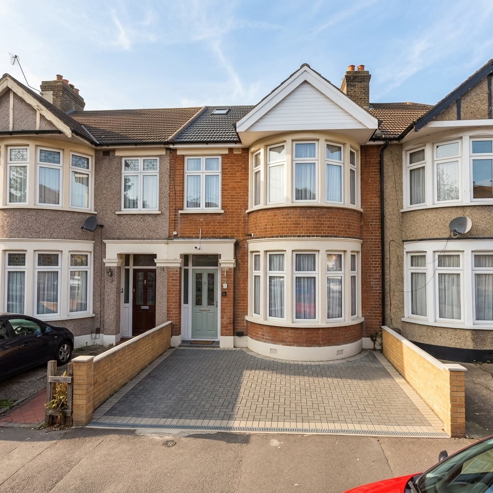
Established residential setting
Smart TV, study desk, internet & welcome pack
Bedrooms and Private Spaces
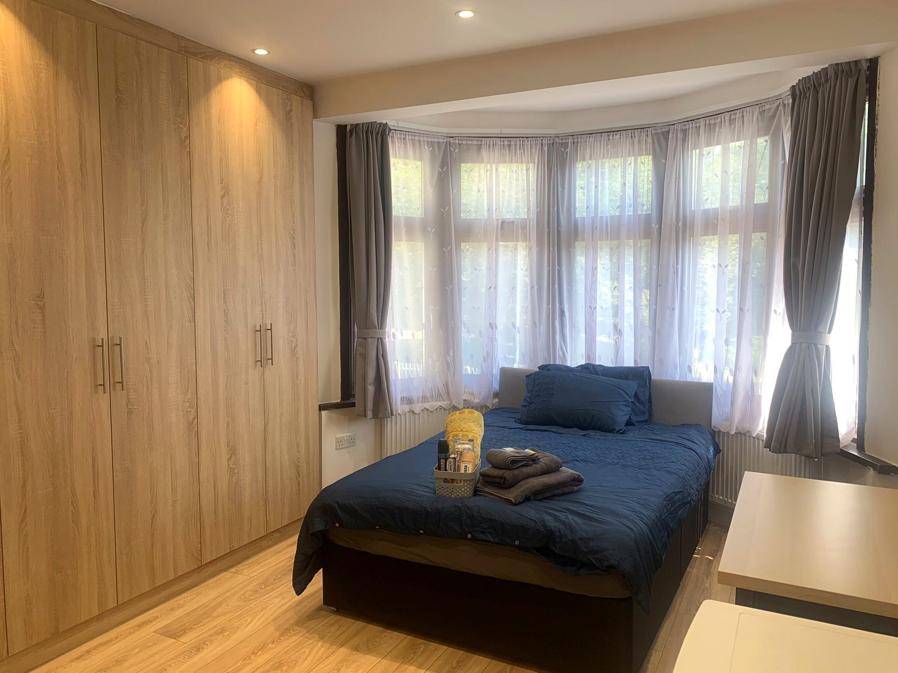
Comfortable private living space
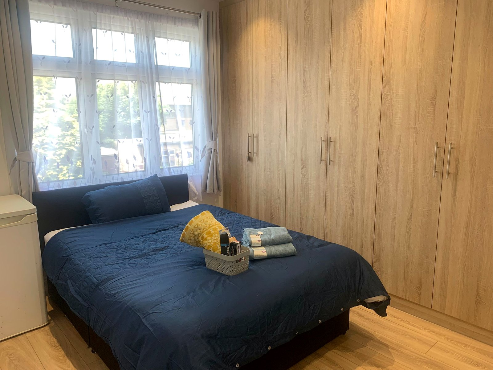
Ready for a comfortable arrival
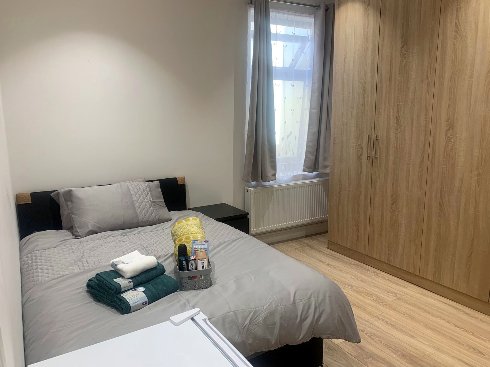
Practical, welcoming accommodation
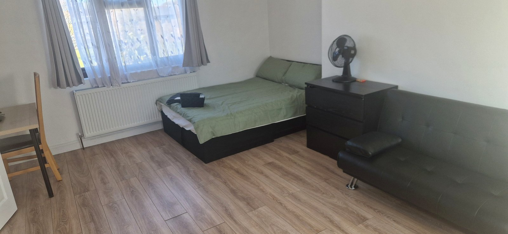
Flexible private living space
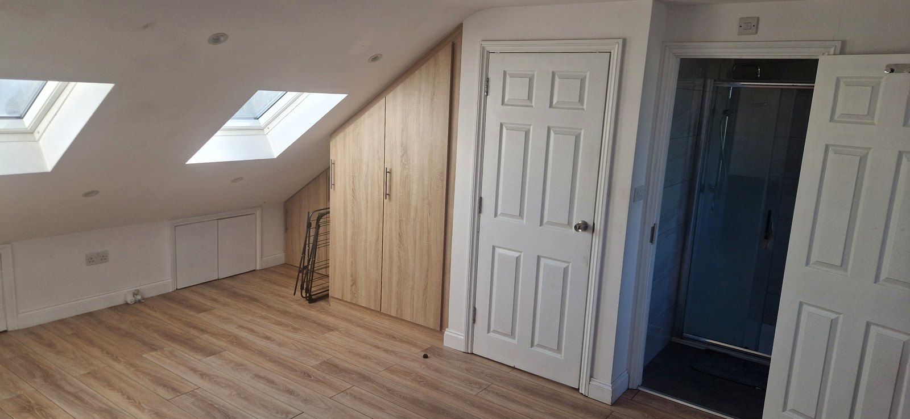
Comfortable furnished accommodation
Shared Facilities
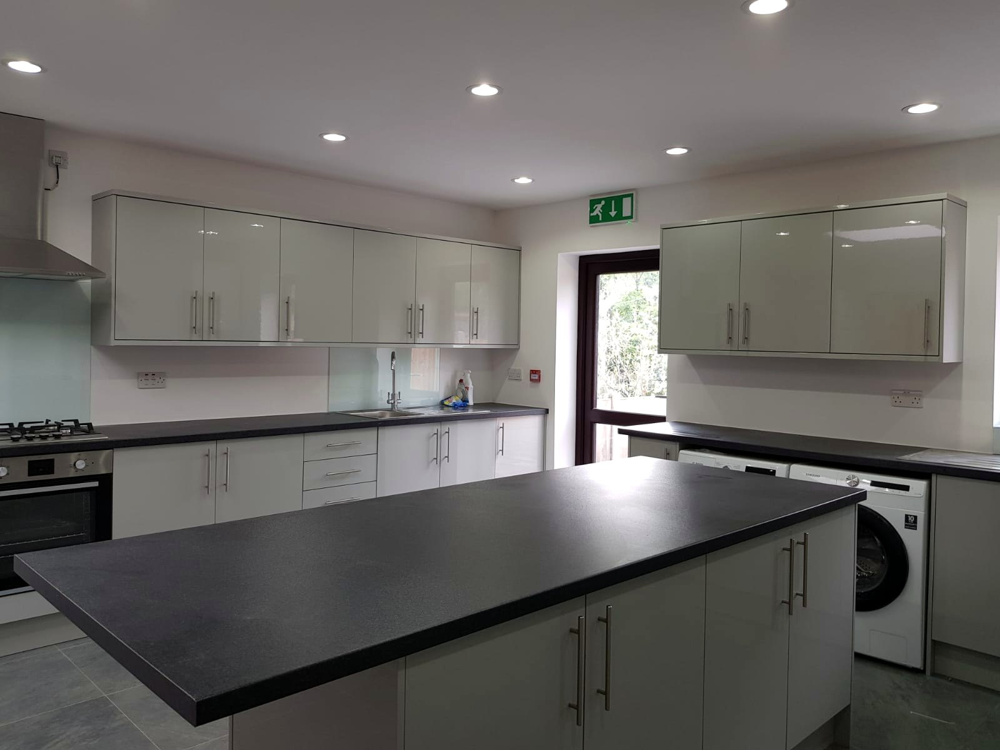
Shared cooking facilities
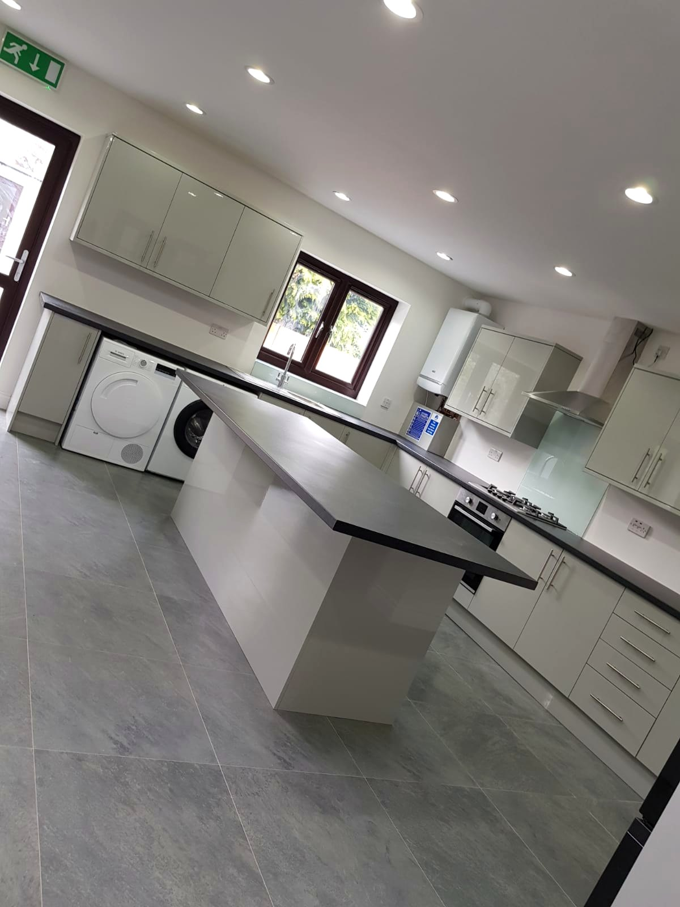
Space for practical living skills
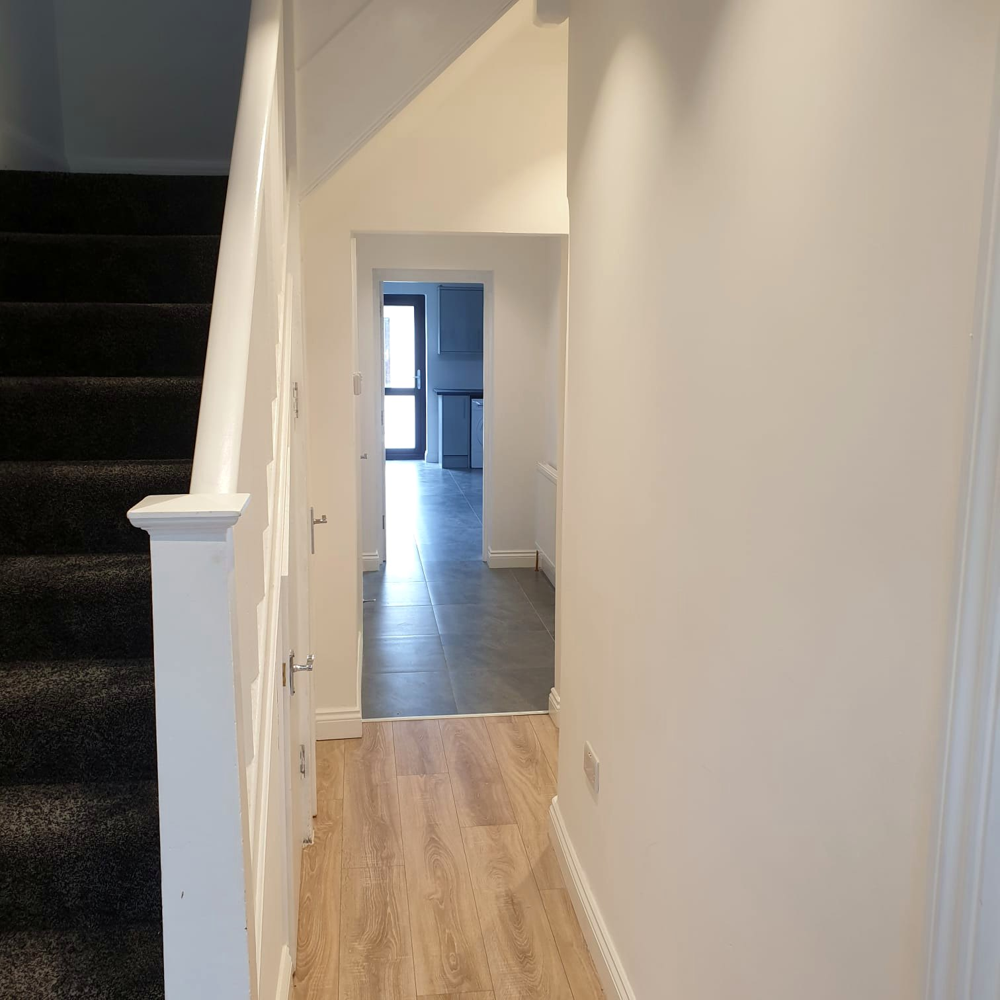
Bright, well-maintained interior
Outdoor and Activity Spaces
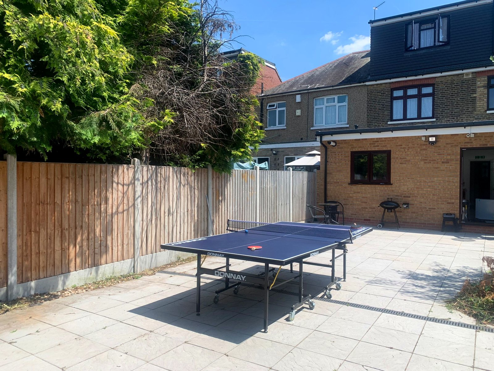
Outdoor recreation space
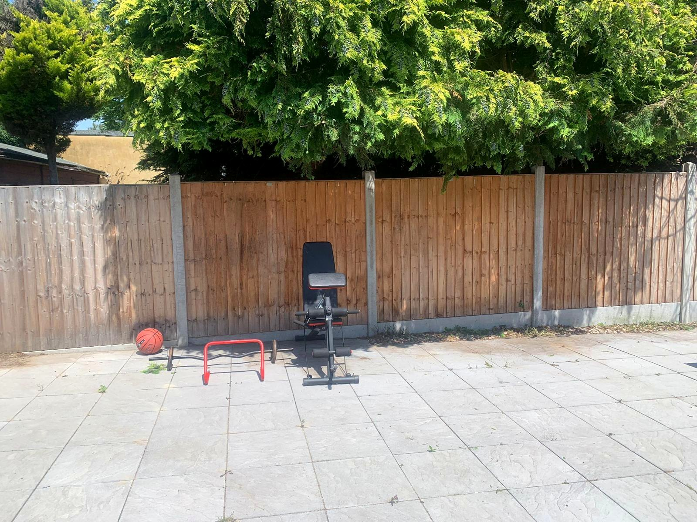
Outdoor exercise facilities
Placement Information
Includes 5 hours of core support and administration.
Any additional support hours required are charged at £25 per hour.
We are pleased to offer immediate placement availability within our step-down supported accommodation. Whether you require an emergency placement, a planned transition placement, or wish to discuss a young person’s individual needs, our placements team is available to assist.
Governance & Leadership
We maintain clear boundaries, regulatory checks, and role ownership across all levels of our service.
Lead: Care Management Team
Oversees individual support plans, safeguarding protocols, resident voice sessions, risk assessments, and care-leavers transition controls.
Lead: Operations Management Team
Manages property maintenance, health & safety compliance, weekly fire drills, safer recruitment, and quality assurance audits.
Lead: Finance Team
Administers resident money transaction records, financial audits, benefit pathways, rent reconciliation, and conflict registers.
Compliance Dashboard
Controlled documents
Annual review date
Priority watch documents
Review before the annual date if there is a serious incident, safeguarding referral, complaint trend, commissioner finding, property/fire safety issue, data breach, staffing failure, finance irregularity, Ofsted/CQC/Housing Act update, or new local authority contract requirement.
| Document | Type | Owner | Review due | Status | Early trigger to watch |
|---|
Policy Portal
Contact Our Placements Team
Our placements team is available to discuss emergency placements, transition planning, and individual support pathways.
The service should confirm the exact registration position before accepting any 16-17 placement or delivering personal care. This website keeps that decision visible in the document framework.
Submit placement inquiry directly to our directors.